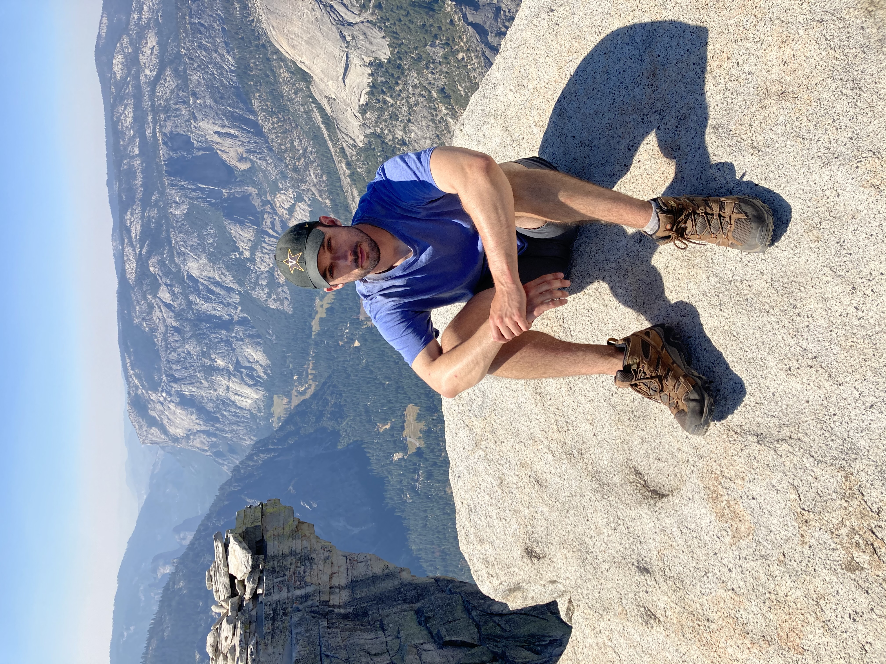

I am a teacher and a seeker of goodness, truth, and beauty. I am interested in algebraic topology, the philosophy of mathematics, social choice theory, decision theory, pedagogical theory, the ethics of technology, the philosophy of attention, and theology.
Photo by Don Jedlovec
